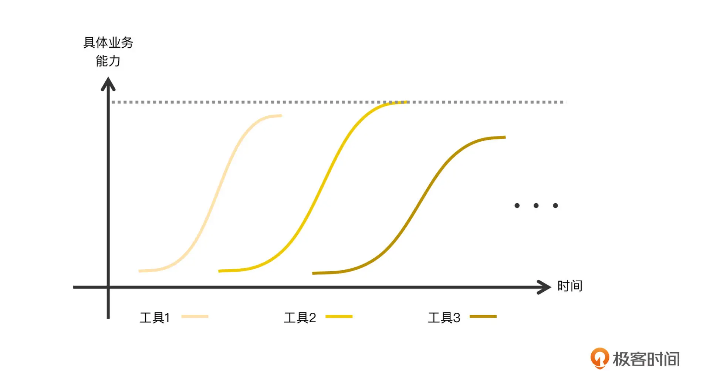
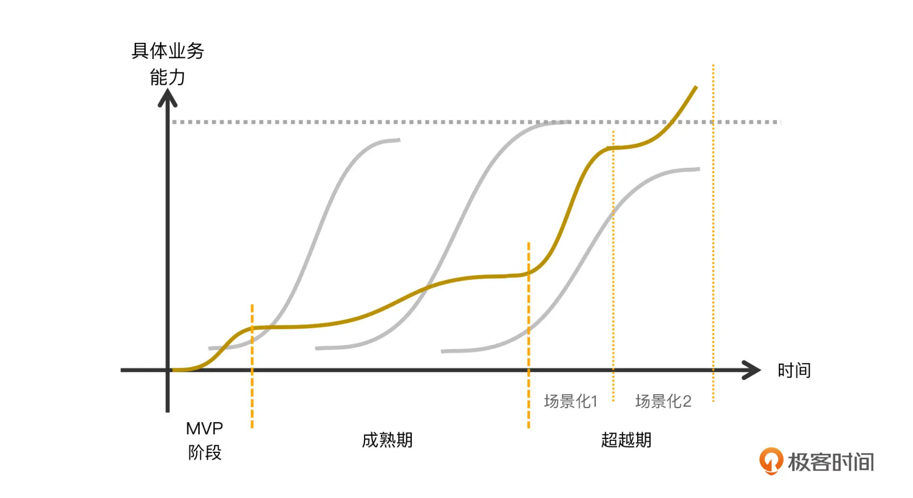
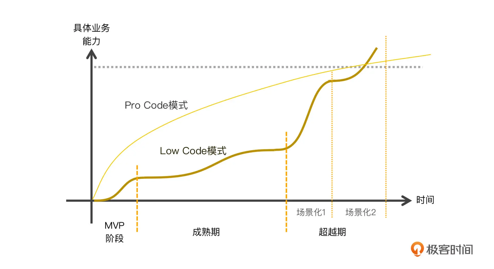

- 00 开篇词｜抛开争论，先来看看真正的低代码.md.html
- 01｜低代码平台到底是什么样的？.md.html
- 02｜低代码到底是银弹，还是行业毒瘤？.md.html
- 03｜低代码的天花板：一个完备的低代码平台应该具备哪些条件？.md.html
- 04｜演进策略：先发展通用能力还是先满足业务需求？.md.html
- 05｜基础设施 ：启动低代码平台研发之前，你需要有什么家底？.md.html
- 06｜踏出新手村便遭遇大Boss：如何架构低代码的引擎？.md.html
- 07｜结构化代码生成法：代码如何生成代码？.md.html
- 08｜布局编辑器：如何做到鱼和熊掌兼得？.md.html
- 09｜属性编辑器：如何解除Web组件属性与编辑器的耦合？.md.html
- 10 可视化编程：如何有效降低App前后端逻辑开发的技能门槛？.md.html
- 11｜亦敌亦友：Low Code与Pro Code混合使用怎样实现？.md.html
- 12 业务数据：再好的App，没有数据也是白搭.md.html
- 13｜多人协同编辑：野百合的春天为啥来得这么晚？.md.html
- 14｜编辑历史：是对Git做改造，还是另辟蹊径？.md.html
- 15｜低代码平台应该优先覆盖应用研发生命周期中的哪些功能？.md.html
- 16｜扩展与定制：如何实现插件系统并形成生态圈？.md.html
- 17｜兼容性问题：如何有效发现兼容性问题？.md.html
- 18｜兼容性问题：如何有效解决兼容性问题？.md.html
- 总结与展望｜低代码之路，我们才刚刚开始.md.html
- 捐赠
04｜演进策略：先发展通用能力还是先满足业务需求？
今天我们来说说低代码平台在不同发展阶段的不同演进策略。我们可以将低代码平台的发展过程划分为 3 个主要阶段：MVP 阶段、成熟期、超越期。
MVP 阶段一般在 3 到 6 个月，时间比较短，主要目的是快速试错、快速闭环。这个目的之外的工作一般都“先放一放”，因此这个时候，备忘录里往往会留下许多待改进条目，但这些欠债在成熟期都要一一偿还。性能问题实际也是一种欠债，单独拎出来说是因为性能问题往往比较麻烦。它是慢性毒药，当毒性呈现出症状时，哪怕是轻微的症状，基本都已经很难搞了。而且，性能与功能是相生相克的，功能追加到一定程度就必然要停下来专门处理性能问题，两者呈现出一种螺旋式上升关系。
成熟期是实现低代码平台过程中的一个比较艰难的阶段。随着 MVP 阶段的需求免疫光环褪去、天使用户开始介入，实际业务需求紧跟着也就来了。此时平台团队往往面临这些直接压力：
偿还 MVP 阶段的欠债；
彻底解决性能问题。
功能欠债也好，性能问题也罢，始终只是技术问题。熬熬夜，牺牲一点发际线总是可以解决的。更麻烦的是，随着低代码平台的实际应用的推进，在 MVP 阶段中被有意无意忽视的业务场景逐渐显露出来，变得越来越具体。
这个状况会把低代码平台的发展道路的抉择推到风口浪尖上：先发展通用能力还是先满足业务需求？
其实，先发展通用能力也好，先满足业务需求也罢，最终目的是一致的，都是着眼于解决实际业务问题。这里的关键是优先发展哪种能力，是着眼于长远，还是着眼于眼下。
而到了超越期，我们的目标就非常明确了：解决具体业务问题，将业务问题梳理为各种场景，然后针对场景做针对性优化，使得在已覆盖的场景里的开发能力、效率等各方面全面超越 Pro Code 模式。
即使是在未覆盖的场景或者特殊场合，低代码平台也可以通过部分回退到 Pro Code 模式的手段、采用高低代码混合的方式，实现对业务开发需求的支持。并保持效率、交付能力相对 Pro Code 模式的优势，从而达到低代码平台将在各方面显现出对传统 Pro Code 模式的全面超越效果，这显然是振奋人心的一个阶段。
通过前面对各个阶段简单的分析可以看到，MVP 阶段和超越期的线路和目标非常明确，我们不需要过多讨论。但成熟期却有两条相对清晰且都很有说服力的发展路径：先发展通用能力还是先满足业务需求。这正是我们这一讲要解决的问题。
选择什么样的发展路径？
这个问题的答案实际上没有太多的悬念：优先发展通用能力。
“通用能力”指的是一种不与某种具体业务绑定的开发能力，是一种能够适用于各种形式业务的开发能力。在这里，我无法给通用能力画一个边界，或者给出一个精确的定义，因为它有很大的弹性，它的边界只存在于每位平台设计者对业务的理解中，或者说在他们的心中。可以说，你对通用能力的边界理解和想象，大概就是你的低代码平台未来的能力上限。
作为一个开发平台，哪怕只是一个开发工具，如果能力过于聚焦，带来的后果会是很难适应不断变化的业务需求，也很难搞定新形态的业务，从而失去拓展新应用领域的机会。最终的结果就是要么是推倒重来，要么就是被其他通用性更强的平台所替代。
毕竟，人人都希望有一个具有更多想象空间的平台，而不是只顾眼下的一亩三分地，一眼就能看到它的边界。想象空间越大表示它能做的事情越多，潜力也就越大，相应地，它能给你的回报也会越大。当你自己对这个平台的能力都没有想象空间的时候，就不可能让别人（上级或投资者）对它有多大的期待，这样就几乎不可能获得更多的资源。
所以，如果非要给“通用能力”画个边界，你对它的想象空间就是这个边界。而你对它的想象空间也决定了别人（上级或投资者）对它的想象空间，从而决定了它能给你带来多少资源和回报。
那么，不走优先发展通用能力的道路，还有其他发展道路可以走吗？
有的。我们可以选择优先聚焦于业务场景和业务痛点，优先发展能快速解决当前业务问题的开发能力、能切实解决业务痛点的能力。仔细想一想，这样的发展线路不但没有问题，而且会显得很务实。从实际问题出发，并且在短期内可以获得成效。
但是过于聚焦的实现往往意味着扩展性不足。一个显而易见的后果就是难以适应后期业务场景的变化，那当这样的状况出现时，要怎么办呢？
有人说：简单，再针对新的业务、新的痛点重新来一次就好了。但如此反复数次后，一个新情况马上就出现了：

这张图就表示了这个状况。你可以看到，每次都从头开始，在短时间解决具体问题的能力确实能迅速爬升，见效快。但由于没有通用性，在最初设定的业务问题都解决了后，自然就到达顶峰，之后基本就没下文了，每个工具都是这样。
如果你是一名管理者，你最容易想到的，可能是如何整合已有的这些工具。一般在评估之后，你会发现这很难！
因为这些工具是由不同的人在不同时间，采用不同方法（Shell、Native App、Web）聚焦在不同问题上开发出来的，简单地说，他们没有共同的基因。更要命的是，这种解决问题的思路形成习惯和传统之后，你会发现无论时间多长，能力的上限基本就在那，没有任何想象空间。显然谁都不希望看到这样的结果。
现在，我们可以来尝试回答一下这个小节标题中的问题了，你应该选择什么样的发展路径？很显然就是走优先选择发展通用能力的路。越通用，想象空间越大。
坚持优先发展通用能力不动摇
但凡事总有两面性。通用是有代价的，它的代价就是不能聚焦于具体业务，从而导致在具体业务上没有很好的表现。甚至，还有可能在开发特定业务的情况下，和传统 Pro Code 方式相比，不仅没有任何改进，甚至还倒退！
这与低代码模式四处标榜的高效、简易等标签相悖，很多低代码的反对者将这些案例收集起来作为毒瘤论的例证。
这里，我放了一张图，展现了优先发展通用能力的工具 / 平台的发展过程：

你可以看到，MVP 阶段与其他工具相似，只是周期很短，短时间内也有能力的迅速爬升。成熟期相对漫长，而且具体业务开发能力缓慢爬升，基本处于啥都差一点的状态。这个时期注重的是发展通用能力，为未来的各种场景做架构设计和打基础、解决性能问题。但这个阶段往往很容易夭折，不仅因为这个阶段难度巨大，而且漫长的持续投入与看到的收益不成比例。
如果你刚好是负责人或直接领导，在这个阶段里应该要不停地讲故事，把你的想象空间尽可能形象地描述给上级或投资者，建立他们的信心。能由此获得更多资源是最好的，但至少不要被压缩现有资源。同时也帮他们建立想象空间，让他们去影响他们的上级。
成熟期的一个显著特征是待实现的多数业务都会触及低代码平台的能力边界。所以几乎每面对一个新需求，你都要接受这样的灵魂拷问：要如何在确保平台的通用能力得到扩展的前提下顺便满足当前需求？即使通用能力无法得到拓展，至少也要避免为了实现某个业务团队需要的开发能力而将该具体业务耦合到平台中。
我的建议是，请按顺序评估如下的因素：
- 评估手里有多少可用资源，这是根本；
- 评估当前用户的友好程度；
- 评估老板或者你自己有多强势，面临业务压力时，他能扛住多久。
资源是一切的根本。资源充裕时，你基本上可以忽略其他任何因素。但资源总是有限的，需要着重考虑的是当各方扛不住业务压力时，有没有备用资源可以投入，以缓解矛盾、快速提供业务需要的开发能力。那些开发能力和效率都值得充分信赖的、又肯熬夜加班的技术骨干，就是一种王炸级别的备用资源。此外，你还要仔细避开那些与投入资源数量无关的困境，比如前面我们提到的性能问题，或者所用技术大大超出已有储备。
平台的用户（即业务开发人员）的友好程度也是一个重要因素。通用的能力往往无法在具体业务开发场景中提供良好的易用性或效率，而难用和低效是需要由他们来直接承受的。因此，如果用户群体的友好度很低，他们三天两头地发邮件，还在各个场合下不余遗力地抱怨，我相信你或者你老板很快就会妥协。在面对低友好度用户的时候，我们就要适当地聚焦在他们的痛点上，而不能一味追求通用能力，反之则可以更多地聚焦在通用能力的研发上。
你或者你老板有多强势是另一个因素。如果出问题时、业务团队不停抱怨时，总有人为你站台的话，你就可以更加专注于发展通用能力上。但这时我们要学会讲故事（画饼），不失一切时机地将通用能力所构筑的想象空间描绘出来。
坚持优先发展通用能力的道路的收获季，是在场景化阶段，也就是超越期。在一个通用的底座之上支持某种具体场景是很容易的，因为此时你考虑的已经不是能不能做到的问题（这个问题在成熟期已经基本解决了），而是要不要做、做成啥样的问题。即使做错了，付出的成本也只是把该场景推到重来而已，并不需要将整个平台推到重来。
这就好比我们国家坚持先发展重工业，后发展轻工业。在重工业阶段投入巨大、艰苦卓绝，但当各个工业门类基本建设齐全之后，再发展轻工业就相对容易得多了。结果有目共睹，近 20 年我国的 GDP 嗖嗖地往上涨。
一旦确定如何实现某个业务场景之后，实现的方法基本上都是一样的：具体化和自动化。
具体化和自动化实际上说的是同一个事情，场景越具体，配置内容也就越具体，越具体的配置内容就越容易实现自动化。这里所谓的自动化，指的就是在具体的业务场景下，基于通用能力自动化生成各种各样的配置。场景越具体，自动生成代码的比例就越高。而自动化完成几乎所有业务的开发，不就是低代码的魅力所在吗？
到了场景化阶段，低代码的魔力才开始显现，才能真正拉开与 Pro Code 模式的差距。这两种开发模式的能力终究会在某个点上出现交叉：

并且，一旦 Low Code 模式的能力超过 Pro Code 模式之后，这个趋势终将不再回头。因为此时的 Low Code 模式将依托于其强大的通用能力，将各个场景逐个纳入到其能力范围内。每个被支持的场景生成的代码都凝聚了技术专家、业务专家的智慧，因此，一旦低代码平台支持了某个场景，凝聚其中的专家经验将持续为高 / 低各种技能水平的使用者赋能和提效。这是 Pro Code 无法做到的。
而 Pro Code 模式，它固有的内秉性知识传递的弊端、以及语言自身能力的限制，导致它的能力上升将极其缓慢。这点你从身边的编码专家身上就可以看到，他们写了十几年代码，却依然摸不到这个领域的天花板，更别提有所突破了。Pro Code 模式的业务交付能力，之所以能随着时间推进持续缓慢爬升，是因为团队人员（不考虑流失）的编码经验在缓慢地提升，但显然靠个人经验的提升来提升业务交付能力的边际收益，必然是越来越低的。
如何保持优先发展通用能力呢？
前面说了，“通用能力”指的是一种不与某种具体业务绑定的开发能力，是一种能够适用于各种形式业务的开发能力。当低代码平台仍处于成熟期时，待实现的多数业务开发能力的需求，都会触及低代码平台的能力边界，我们需要创造出新的能力来拓展平台的能力边界。而且，用于拓展能力边界的功能都要是通用的，而不能只适用于当前的具体业务。
这样讲比较抽象，接下来我讲一个我自己的实际案例，帮你加深理解。
第一个例子是关于大场景的需求。在 MVP 阶段甚至更早的时候，我们的业务团队提出了两个比较典型的应用场景：一是低代码平台需要能支持表单的可视化开发；二是低代码平台需要能支持 Dashboard 的可视化开发。
这两个需求本身其实就已经具有很高的通用性了，直接照做也无可厚非。但深挖下去，你会发现这样的问题也需要一并解决：
- 极少有表单单独成一个 App 的（否则就变成调查问卷了），表单与表单之间如何串联？
- Dashboard 里也有可能使用表单，有的 Dashboard 会有查询条件，查询条件部分就是一个表单（这在我所在的产品里很常见）。
为了能同时解决这几个显式和隐式问题，低代码平台最起码需要提供一个能同时支持表单、Dashboard，以及它们相互引用的功能。实际上，能满足这样功能的编辑器的通用程度就已经很高了，再考虑到其他可能出现的应用场景，我们很容易想到需要打造一个不以任何具体场景为假设前提的场景编辑功能。后来我将这个场景称为通用场景。
第二个例子是关于图形的需求。应用团队提出需要提供柱状图、折线图、饼图、仪表盘等常见图形的可视化编辑功能。其他常见的图形还有散点图、漏斗图等不下 10 种图形。
这里需要说明一下背景，我是 echarts 来绘制图形的。对它有一点了解的人都都知道，echarts 不仅可以绘制这 10 来种常见图形，也能绘制其他许许多多不常见的图形。
每一种图的配置方式差距非常大，挨个去定制的话基本等于做 10 个独立的图形，但需求又非常多，我们不可能一个个去定制。于是我决定先提供一个支持任意图形的开发能力，而不提供可视化方式。当然，这事是先要和应用团队沟通的。这样做的话，短时间内可以满足业务团队对图形的任何需求，而我也可以将资源投入到其他功能的开发。
其实类似例子有很多，但这两个案例已经足以说明问题了，现在来总结一下我在这样的情况下的方法：
- 对业务提交的任何功能需求，都按照最通用情形来考虑。即使对方只要一棵树，仍按照一座森林来考虑，我们不见得就要实际交付一座“森林”，但要为它预留足够的位置；
- 充分考虑已知场景的共同特征，暂时把它们的个性化特征丢角落里。过多考虑个性化特征只会限制你的想象力，这会牺牲掉许多易用性，但这是权衡之下必要的取舍，这是通用的代价。
还有第 3 点，是上面两个实例没体现出来的：
- 任何业务需求，只要能采用已有的功能实现的，决不新增功能；只要保持已有功能通用性不变前提下稍微扩展就能实现的，也决不新增功能；好钢用在刀刃上，资源集中投放到开发新的通用能力上，不分散。
还有第 4 点，是非技术性因素：
- 之所以我能坚持这么做，是因为我的用户群友好程度较高，主要得益于我平时注重提升他们的满意度：倾听他们的痛点，主动热心协助解决问题（编码、出方案等），帮助他们脱困；一般只要他们的自身的需求能按时交付，他们就会很高兴；记住：放低姿态。
采用上面总结的 4 点咬牙坚持一段时间，大约 12 到 18 个月后，基本就可以熬过成熟期了。此时你会发现你的低代码平台基本上啥业务需求都可以实现了（虽然采用的实现方法没有像传说中的低代码那样酷）。但这意味着你的平台已经活下来了，并且有了一定应用基础，可以考虑进入了超越期了。
现在我们就可以充分聚焦到各个场景的个性化需求上了。这时我们再回顾下前面那两个实例。
通用化场景下表单的开发非常繁琐，数据采集后的所有校验都需要应用自己捕捉事件，自己编写校验逻辑。小到文本是否过长过短，大到服务端异步校验，都非常繁琐。那么我们可以针对表单的特性设计出新的配置流程，把校验逻辑全部自动化实现。应用只要填写校验规则和出错提示文本就可以了。
通用化场景下的 Dashboard，无论是布局还是交互也都非常麻烦。现在我们可以针对它设计一个基于卡片的布局器，交互也可以简化成单传参和获取数据。这样，一个图表甚至都可以不用去关注其他图表，也能实现联动效果。
通用化的图形实现，实际上就是直接填写 echarts options。这个门槛很高，需要学习 echarts 的大量配置 API。那么现在我们就可以针对常见的图形，设计出针对性的可视化配置方式，屏蔽掉绝大部分 echarts 配置细节，做到只要会填表单就能开发出复杂图形。
那为啥一开始不这么做呢？资源！
当我们手里没那么多资源可以同时铺开时，我们既要保证新场景的支持不至于耽误应用团队的工期（这是最容易被投诉的因素），同时又要把已有场景做得很完美，这是需要大量资源的。实现一个通用能力，可以同时解决掉许多业务的开发需求，但如果我们把相同的时间投入到某个场景，即使做得尽善尽美，那也只能解决那一丢丢需求。我前面就说过了，在资源充裕的前提下，基本不需要考虑方式方法，干就完了。但现实的资源总是有限的，我只能这么做。
在超越期，场景化完善之后，是否通用场景就没用了呢？绝不是！
这些通用场景会华丽地转职为兜底策略的一部分。我说过，再完美的低代码平台也总有能力边界，总有业务团队提一些“奇葩”需求越过这条线。此时通用的功能就可以发挥兜底的作用，让应用能按期交付的同时，也给平台团队喘口气的时间。我们甚至可以根据这个需求的“奇葩”程度决定是否要无视它，即使这个需求下次再来，我还是有办法治它的。这就是兜底策略给的底气！
总结
今天我详细讨论了低代码平台演进策略，将演进过程分为三个主要阶段：MVP 阶段、成熟期、超越期。针对成熟期和超越期的发展策略，给出了不同的侧重。成熟期侧重于发展通用能力，而超越期侧重于发展场景化和提效的能力。
成熟期是一个相对漫长的，比较难熬的阶段。在资源不充裕的前提下，为了着眼于长期演进，必须坚持优先发展通用化能力的思路。对业务提交的任何功能需求，都按照最通用情形来考虑，同时充分考虑各个场景的共同特征，而暂时忽略他们的个性化特征。坚持采用已有功能来实现各种需求，通过这个方法倒逼已有功能的进一步通用化。同时我们也要放低姿态，注重培育和改善与应用团队之间的关系，还可以与 UX 团队保持良好通畅的沟通，要求他们不要设计出一些超过当前能力的应用出来。
到了超越期，我们的重心就要转移到各个功能的个性化需求上来了，此时要把个性化需求和易用性提升到最高优先级。必要的话，甚至可不惜重新设计各个具体场景的开发流程，以获得更高的自动化开发水平，尽可能高地提升代码的自动生成比例，从而最大化地发挥低代码的开发优势。而此时在成熟期留下来的诸多通用能力，就成了平台的兜底策略的一部分，可以兜住场景化所未能覆盖到的那 20% 的场景。
思考题
- 低代码平台发展过程中的成熟期非常关键，这个阶段的发展质量基本决定了低代码平台整体质量，你认可这个观点吗？为什么？
- 除了这一讲提到的 Dashboard 场景和表单场景，你认为还有哪些场景与低代码技术是“天作之合”？完成了与低代码的结合之后，将对你现在的业务产生什么样的效果？
期待在留言区看到你的想法。我们下节课见。
© 2019 - 2023 Liangliang Lee. Powered by gin and hexo-theme-book.